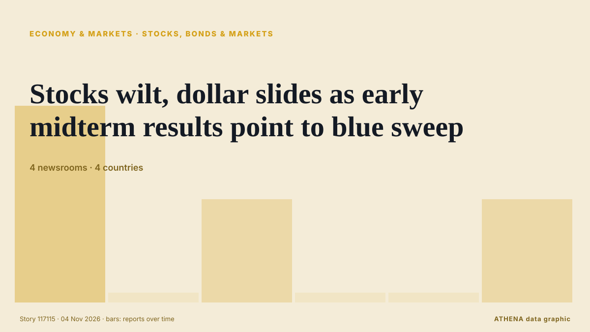

Акции, облигации и рынки
СпонсорПри поддержке  Cybernetics and Artificial Intelligence Lab Welcome to the Cybernetics and Artificial Intelligence Laboratory, established at the Department of Business Administration of the National and Kapodistrian University of Athens. The lab is headed by Professor Dimitrios Thomakos. The lab aims to do research that can be published in top venues. Our research uses tools and methods of Artificial Intelligence, and lies in the following areas: - Forecasting - Decision making - Cyber security - Finance We are always looking forward to collaborating with exceptional students!
Cybernetics and Artificial Intelligence Lab Welcome to the Cybernetics and Artificial Intelligence Laboratory, established at the Department of Business Administration of the National and Kapodistrian University of Athens. The lab is headed by Professor Dimitrios Thomakos. The lab aims to do research that can be published in top venues. Our research uses tools and methods of Artificial Intelligence, and lies in the following areas: - Forecasting - Decision making - Cyber security - Finance We are always looking forward to collaborating with exceptional students!
| 22 окт. | 0 |
|---|---|
| 23 окт. | 0 |
| 24 окт. | 0 |
| 25 окт. | 0 |
| 26 окт. | 1 |
| 27 окт. | 0 |
| 28 окт. | 0 |
| 29 окт. | 0 |
| 30 окт. | 4 |
| 31 окт. | 1 |
| 1 нояб. | 1 |
| 2 нояб. | 9 |
| 3 нояб. | 4 |
| 4 нояб. | 4 |
Заголовки приводятся на английском языке, как они были опубликованы.

Stocks wilt, dollar slides as early midterm results point to blue sweep
Prediction markets signal growing expectations of a Democratic win. из The Business Times
Gold Falls 0.65% to US$3,922 as US Yields Rise | Gold & Silver, Nov 3
Gold fell 0.65% to US$3,922 an ounce as US yields rose to 4.93% and the dollar firmed. из The Rio Times
Pierce Brosnan Endorses Callum Turner As Next James Bond As “He’s So Strong”; Josh O’Connor Reacts To Talk Around 007 Casting
Two names rumored to take on the James Bond role next are Callum Turner and Josh O’Connor, and reactions to the idea of them playing 007 on the big screen are coming in. из Deadline
Meta raises $15 billion in five-part US bond sale to fund AI expansion
Meta is aiming to raise between $20 billion and $25 billion in a bond sale as the company ramps up spending on infrastructure and AI models and services. из CNBC World
US stocks: S&P 500 ends down; Apple dips ahead of quarterly report
The major indices closed mixed for the day. из The Business Times
Josh O’Connor says Bond rumours are a ‘bizarre pinch me moment’
The Crown star, 36, is believed to be in the running for the role alongside One Night Only actor Callum Turner and Slow Horses’ Jack Lowden. из Evening Standard (London)
Healey corrects Treasury colleague as he confirms employers are ‘working people’
John Healey has distanced himself from remarks made by his colleague, the Treasury minister Emma Reynolds, as he confirmed employers did count as working people. из City A.M.
The midterms and the world
A Democratic sweep of both houses of Congress would see big changes on energy and trade in particular. из Financial Times - Global economy
Jack Lowden speaks out over James Bond rumours as speculation soars over future 007
The Slow Horses actor is one of the rising stars of his generation - could he be the next 007? из Evening Standard (London)
An unusual sexual bond between a bull and a male donkey
Sex between animals of the same sex is widespread in nature. из Phys.org
S&P cuts Meta’s outlook to negative
Meta has been given a negative outlook by S&P Global Ratings due to the company's hefty capital expenditures and concerns about free cash flow. из CNBC World
Alphabet launches €6B bond sale in first test of AI debt since selloff
Google’s parent company Alphabet began selling €6bn ($6.7bn) of bonds on Monday. из The Next Web
Asian stocks mixed as tech sector struggles to rebound from selloff
Artificial intelligence (AI)-linked firms were hit by another wave of selling as Wall Street giants including Amazon, Alphabet and Microsoft signalled they would keep pouring money into data centres… из CNA (Channel NewsAsia)
Warren Buffett, 96, has ‘not had water in 48 years’: ‘No thank you. I’ll have a…’
Jeff Bezos shared insights on investing in artificial intelligence stocks while discussing broader market trends. из Times of India
Anthropic plans to sell $3.5 billion of shares to Japan investors in IPO, filing shows
This will go towards raising working capital and funding operating expenses and capital expenditure. из The Business Times
OPay Halts $4 Billion NYSE IPO on Listing Day
OPay, a digital financial platform built for emerging markets, has decided to postpone its planned initial public offering due to “an ongoing inquiry by a regulatory authority,” the company said in a… из PYMNTS
CJP backs INDIA bloc's Ramlila Maidan rally, but won't participate in it, says Dipke; cites ‘neutral platform’ identity
Abhijeet Dipke said the CJP supported the cause but would maintain its independent identity. из Hindustan Times